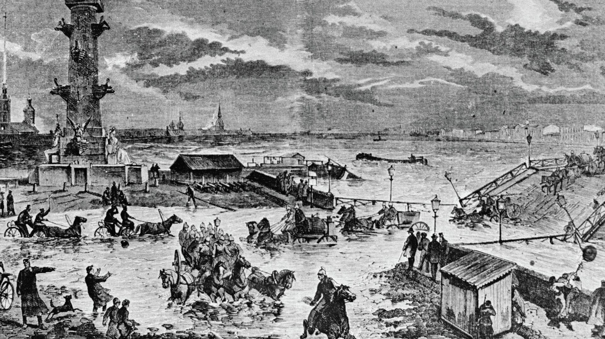

1824: Во власти стихии
День великого бедствия
7 ноября 1824 года Санкт-Петербург пережил самое страшное наводнение за всю свою историю. Буря, пришедшая с Финского залива, погнала невскую воду вспять. К полудню вода поднялась на 421 сантиметр выше ординара, превратив улицы города в бушующие реки.


Город под водой
Вода прибывала с такой скоростью, что люди не успевали спасаться. Деревянные дома сносило целиком, мосты срывало с петель. Император Александр I, наблюдая за катастрофой с балкона Зимнего дворца, произнес знаменитую фразу: «За это Бог взыщет с меня, а не с народа». На следующий день город представлял собой груду развалин, покрытых илом и обломками судов.
Трагедия 1824 года навсегда изменила облик столицы. Были приняты новые правила застройки, а в память о событии на стенах домов по всему городу появились гранитные таблички с отметкой уровня воды, которые до сих пор напоминают о хрупкости человека перед лицом природы.